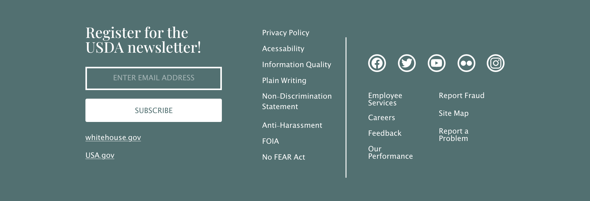

Overview
The United States Department of Agriculture provides leadership on our Nation's food, agriculture, natural resources, rural development, nutrition, and related issues based on public policy. Their website serves as a tool to inform the public on these issues using the best available science.
The USDA's vision is to help rural America thrive, to promote the best possible agriculture production, and preserve our Nation's natural resources through conservation. Their current website does not capture this vision. My goal is to connect American's with the USDA and capture it's vision in a responsive redesign of their website.
Role
UX research
UI style guide
Accessibility
Information Architecture
Responsive Wireframes
Responsive HiFi Prototype
Duration
Three weeks
Tools
Adobe XD
Adobe Illustrator
The Problem
Government websites have a huge library of important information that can be hard to organize in a user friendly way. The USDA's website is hard to navigate and inconsistent. For someone seeking information to produce agriculture or live sustainably the complicated organization of the USDA's website can be intimidating and discouraging. Additionally, it is not responsive and bland.
Opportunities
Empower Rural America
Increase America's food safety
Help America become more sustainable and eco friendly through design
Heiristic Evaluation
The research phase began with a heuristic evaluation in which I redlined the current website, noted elements it was missing, and annotated things that needed to change in green. The biggest problem is the sites information hierarchy. The confusing drop downs and ambiguous navigation titles make the site nearly impossible to navigate. The recall page is overwhelming with many external links and does not match the homepage. All of the useful information is hidden in the cracks of the website.
Current Website
Proto
Persona
To better understand how the website looks to its users, I created a proto persona. Dwayne Thomas is a soybean farmer in a rural town. He needs to use the website to produce the best soybeans he can and make his farm more sustainable.
Wire flow
Viewing the site through Dwayne's eyes, I created a wire flow of a typical user flow to view food recalls. Dwayne is viewing multiple pages because the hierarchy of information is poor. The organization of topics is all over the place. The design on the pages is not consistent. There are confusing words and links everywhere. Dwayne is most likely feeling pretty overwhelmed!
Interaction design and IA
In order to make a better hierarchy of information I broke down the current hierarchy of information and interactions (red) and information architecture (purple). Using the LATCH model I analyzed what information in the hierarchy was useful and what was not. The location of where things were placed on the site, once you got past the navigation, was okay. The site did alphabetize topics in a useful way. Organization of things based on time is a mess and the blog and current recalls need to be adjusted accordingly. There were barely any categories so I made a note to implement more categorization. The hierarchy contained irrelevant topics so I created a new one.

sitemap
Based off of my LATCH analysis of the website, I created the new sitemap. I searched other government websites and I liked how whitehouse.gov organized their topics in a top navigation bar and a hamburger menu so I followed that principal, created sub topics, and reorganized the site. I also added more places where information is categorized, then alphabetized. The new hierarchy I implemented directed users to the most important resources or information.
Wireframes
I implemented the new sitemap on responsive wireframes for desktop, tablet, and mobile. I kept the new hierarchy in mind and completely redesigned the home screen.
Searching by Category
From my LATCH analysis I knew I wanted to focus on categorization when organizing the new hierarchy. I implemented a search by category interaction on the front page. This allows a beautiful and more user friendly approach to organizing the main topics of the website. It helps to transfer knowledge stored in the head to knowledge in the world. While we are giving the user space and control over where they are directed next with the circular buttons it allows users to feel more empowered.
Government accessibility
Looking forward to my High Fidelity design I picked colors I knew were AA compliant and ensured all accessibility standards were up to date on the new design and accessible for color blind people. I also made sure that all government website required links were present and redesigned the footer to contain them in a more appealing way.
hifi Prototype
Moving into High Fidelity I utilized Adobe XD's auto animate feature to create beautiful micro interactions on the updated website design.
See the desktop project here.Mobile Prototype here.Conclusion
The most important takeaway I learned from this was the importance of designing together. Although I designed the prototype alone I learned how great teammates can help inspire and motivate your research process and I am so thankful for my team! My favorite thing about this project was it got me thinking about how design can influence the future and empower others. The agricultural community can make a huge impact on the environment but it is hard to inspire change in a community that has historically not been well connected. Through a user friendly website, farmers can feel empowered through the community to do what they love and inspire change which is an amazing thing! The old website was hard to navigate and many users tend to blame themselves for this and become discouraged. The new IA created was designed to help people get the resources they need.